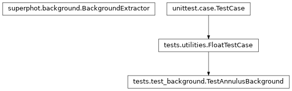

tests.test_background module¶
Class Inheritance Diagram¶
Test SuperPhot’s background extraction.
-
class
tests.test_background.TestAnnulusBackground(methodName='runTest')[source]¶ Bases:
tests.utilities.FloatTestCase
Test background extraction based on annuli around sources.
-
static
add_flux_around_sources(source_x, source_y, radius, extra_flux, image)[source]¶ Add extra flux to image pixels within a radius around sources.
Parameters: - source_x – The x coordinates of the sources to add flux around.
- source_x – The y coordinates of the sources to add flux around.
- radius – Pixes with centers within this radius get extra flux.
- extra_flux – The amount of extra flux per pixel to add.
- image – The image to add flux to.
Returns: None
-
static